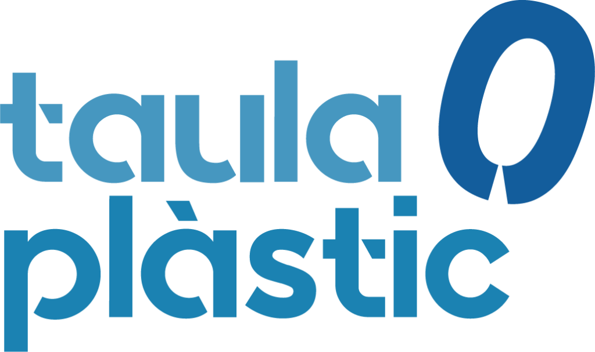

Barceloneta Proa a la Mar (BPM) és un projecte comunitari
innovador de la Barceloneta que neix el 2013 com una iniciativa veïnal i que està
orientada
al
desenvolupament local del barri al voltant de tres eixos:
Barceloneta Proa a la Mar (BPM) és un projecte comunitari
innovador de la Barceloneta que neix el 2013 com una iniciativa veïnal i que està
orientada
al
desenvolupament local del barri al voltant de tres eixos:
Projectes
Tast d'Oficis de la Barceloneta
El Tast d'Oficis de la Barceloneta és un recurs educatiu d'iniciativa comunitària dirigit a alumnes de 4t d'ESO de la Barceloneta que, mitjançant tot un seguit de sessions teòriques i pràctiques, té la finalitat de donar a conèixer i posar en valor les possibilitats formatives i oportunitats ocupacionals que ofereix el territori, així com el seu encaix entre ambdues, fomentant d'aquesta manera la formació professional de qualitat entre els joves del barri, tot acompanyant-los en la transició escola-treball.
Objectiu
El Tast d'Oficis pretén donar a conèixer a l'alumnat de 4t d'ESO de la Barceloneta l'àmplia formació professional ofertada al barri, una oferta de gran valor afegit, per tal d'animar-los a que continuïn formant-se més enllà dels estudis obligatoris en sectors professionals de futur.En aquest sentit, el Tast d'Oficis de la Barceloneta pretén:
- Promoure l’oferta educativa postobligatòria del barri.
- Apropar els joves i les seves famílies als centres educatius de la Barceloneta per conèixer els cicles formatius que s’hi imparteixen.
- Reduir el percentatge d’abandonament escolar dels joves del barri de la Barceloneta.
- Esdevenir una proposta complementària d’acompanyament i orientació formativa dels alumnes de la Barceloneta, en total coordinació amb els centres educatius del barri.
- Potenciar la formació professional i posar-la en valor.
- Millorar l'ocupabilitat dels joves de la Barceloneta.
- Difondre el Mapa dels Perfils Professionals de la Barceloneta per donar a conèixer les necessitats, demandes i oportunitats laborals del territori, així com els sectors professionals de l’entorn potencialment generadors d’ocupació.
- Que tots els centres educatius del barri comparteixin uns objectius comuns i tinguin una mirada comunitària entorn l'educació.
Contingut i àmbits d’intervenció
Mòdul 1: Ocupació i territori
- Sessió 1: Mapa de perfils professionals de la Barceloneta
- Sessió 2: Visita als diferents centres de formació professional del barri
Mòdul 2: Descobrint altres formes d’ocupar-se: la mirada comunitària
- Sessió 1: L’Economia social i solidària
- Sessió 2: Visita a diferents iniciatives d’emprenedoria comunitària de la Barceloneta
Mòdul 3: Cultura laboral
- Sessió 1: Drets laborals
- Sessió 2: Visita a empreses del territori
Recursos educatius comunitaris emprats (sessions teòriques)
- Projecció del vídeo Tast d'Oficis de la Barceloneta:
Vídeo d'edició pròpia (PDC) que mostra els diferents graus i sortides laborals que oferten els centres de formació professional de la Barceloneta presentat per alumnes que actualment estan cursant els graus. Els alumnes expliquen per què van triar aquest cicle i per què el recomanarien a futurs alumnes. L'objectiu d'aquest vídeo és fer la sessió teòrica més visual, dinàmica, atractiva i propera de cara els alumnes. - Presentació del Mapa de Perfils Professionals de la Barceloneta (edició pròpia):
El Mapa de Perfils Professionals de la Barceloneta és fruit de la diagnosi realitzada per la Comissió de Formació de Barceloneta Proa a la Mar.
Aquest mapa de format digital permet visualitzar els diferents jaciments ocupacionals detectats al territori (litoral, port de mercaderies, port olímpic, nova bocana, centre urbà del barri...) de diversos àmbits professionals com són el manteniment d'embarcacions, la marineria, la logística, l'esport nàutic, l'educació mediambiental, l'educació en el lleure, el comerç, els serveis, la restauració, etc.
Alhora el mapa proporciona altres informacions rellevants com on et pots formar o quines competències requereixen els diferents perfils professionals demandants.
L'objectiu d'aquest mapa és mostrar als alumnes l'encaix entre l'oferta formativa del barri i les oportunitats laborals del territori per tal de visibilitzar i posar en valor el futur laboral al barri de la Barceloneta.
Confluència d'iniciatives socials mediambientals vinculades al mar
L’Espai Mediterrani és un punt de trobada entre entitats i associacions que realitzen accions vinculades al medi marí a Barcelona. És un punt de confluència d’iniciatives que té per objectiu generar sinergies i alinear estratègies per a la cura dels mars i oceans.
Anar a la web de l'Espai Mediterrani

La Taula Plàstic 0 de la Barceloneta s'impulsa donant resposta a una proposta de
ciutat per promoure la ciència ciutadana als barris que, en el cas particular de la
Barceloneta, entén que ha de fer-se en clau territorial, comunitària i marina.
Amb aquesta mirada es reforça el projecte Observadors del Mar (Institut de
Ciències del Mar-Museu Marítim de Barcelona), entenent la ciència marina part del
llegat i la identitat del barri de la Barceloneta que cal promoure.
És d'aquesta manera com Barceloneta Proa a la Mar i el Centre Cívic de la Barceloneta impulsa la Taula Plàstic 0, en el marc del programa Ciència Ciutadana als barris.
L’objectiu de la iniciativa Taula Plàstic 0, en aquest marc, és conèixer i denunciar la contaminació per macro i microplàstics a les costes del nostre territori, i de tot el món. En aquest projecte estan implicats equipaments, organitzacions, entitats, escoles i veïnat de la Barceloneta, formant part així d’una xarxa d’observatoris a la Mediterrània.
Més enllà del projecte Observadors del Mar, la Taula evoluciona portant a terme accions de sensibilització amb l'objectiu de disminuir l'ús de plàstics durant els esdeveniments festius i comunitaris del barri de la Barceloneta.
Totes les accions conjuntes de la Taula s'etiqueten i es poden seguir a través del hashtag #barcelonetaplastic0
És d'aquesta manera com Barceloneta Proa a la Mar i el Centre Cívic de la Barceloneta impulsa la Taula Plàstic 0, en el marc del programa Ciència Ciutadana als barris.
L’objectiu de la iniciativa Taula Plàstic 0, en aquest marc, és conèixer i denunciar la contaminació per macro i microplàstics a les costes del nostre territori, i de tot el món. En aquest projecte estan implicats equipaments, organitzacions, entitats, escoles i veïnat de la Barceloneta, formant part així d’una xarxa d’observatoris a la Mediterrània.
Més enllà del projecte Observadors del Mar, la Taula evoluciona portant a terme accions de sensibilització amb l'objectiu de disminuir l'ús de plàstics durant els esdeveniments festius i comunitaris del barri de la Barceloneta.
Composició
La Taula Plàstic 0 la conforma els següents equipaments, entitats i iniciatives vinculades al barri de La Barceloneta*:- Associació Cap a Mar
- Associació Planeta Barceloneta
- AFA Escola Mediterrània
- Anèl·lides, Serveis Ambientals Marins
- Institut de Ciències del Mar (CSIC)
- El Centre de la Platja
- Espai de Mar
- La Fàbrica del Sol
- Ateneu de fabricació
- Museu Marítim de Barcelona
- Tècnica de barri (Districte de Ciutat Vella)
- Centre Cívic Barceloneta
- Barceloneta Proa a la Mar
Àmbits d'actuació
La Taula Plàstic 0 té una naturalesa comunitària i porta a terme accions per promoure la sostenibilitat i el consum conscient en el marc de les festes populars de la Barceloneta, espais on el barri s'autoreconeix i s'emplaça. Alguns d'aquests espais i esdeveniments són els següents:- Mostra d'Entitats de la Barceloneta
- Festes de la Primavera
- Festa Major de la Barceloneta
- Festa de l'Arbre (i altres festes populars)
- Guingueta Proa a la Mar
Accions
La Taula Plàstic 0 ha participat en les Festes de la Primavera 2017, a la Mostra d'entitats de la Barceloneta 2018, a la Festa de l'Arbre 2018 i 2019, al Festival Posidònia 2019 i al Dia Internacional sense bosses de plàstic 2019 i 2021, entre d'altres.Totes les accions conjuntes de la Taula s'etiqueten i es poden seguir a través del hashtag #barcelonetaplastic0
vídeo, fotos
fotos
fotos
Espai de participació
La governança i l’estructura organitzativa de Barceloneta Proa a la Mar/PIOL és la següent:
Espai
integrat per entitats veïnals del barri,
centres educatius, equipaments municipals i l’equip de treballadores
comunitàries, on es consensuen els objectius estratègics i les línies de treball
del projecte.
Espai de treball format per veïnat del barri i la
treballadora comunitària que dinamitza el PIOL. En aquesta taula es treballa
tots els aspectes relacionats amb l’ocupació i la formació ocupacional del
projecte.
Vídeo
En aquest vídeo podeu veure una explicació detallada del projecte a partir del minut
1:30.